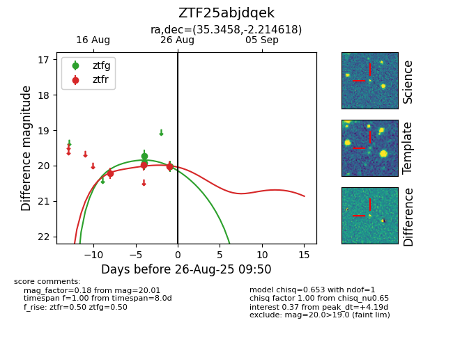

Target ZTF25abjdqek at 2025-08-26 09:50, see:
FINK: fink-portal.org/ZTF25abjdqek
Lasair: lasair-ztf.lsst.ac.uk/objects/ZTF25abjdqek
ALeRCE: alerce.online/object/ZTF25abjdqek
alt names
ZTF25abjdqek (ztf,fink)
coordinates:
equatorial (ra, dec) = (35.3458,-2.21462)
galactic (l, b) = (167.6016,-57.06938)
photometry
last ztfg=20.01, ztfr=20.02
3 ztfg, 3 ztfr detections
